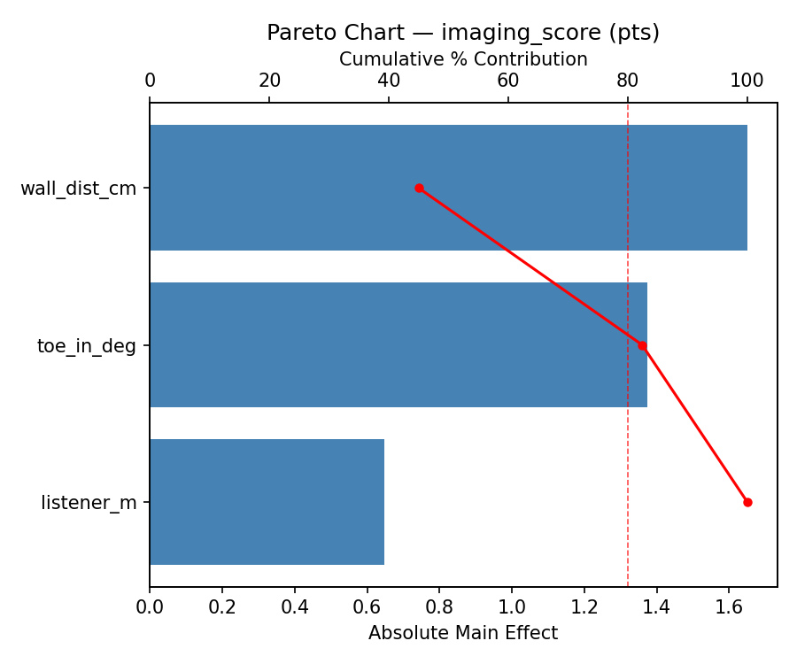
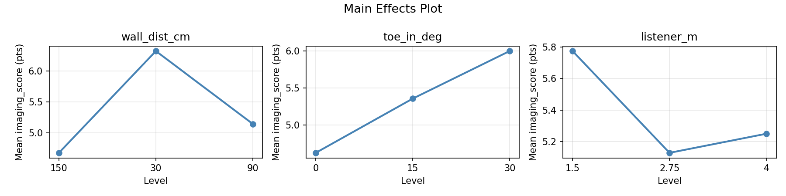
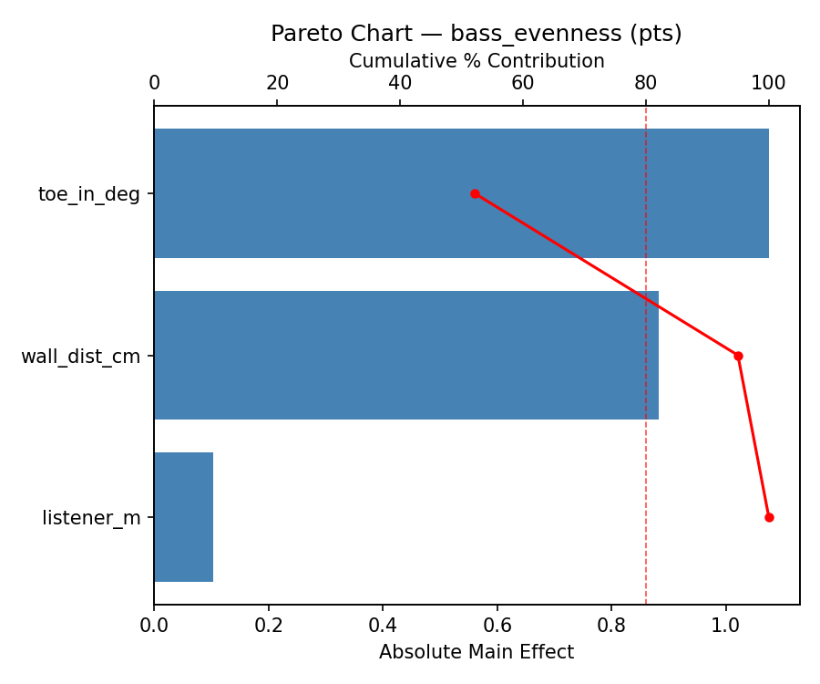
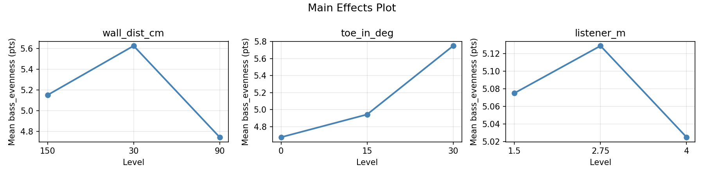
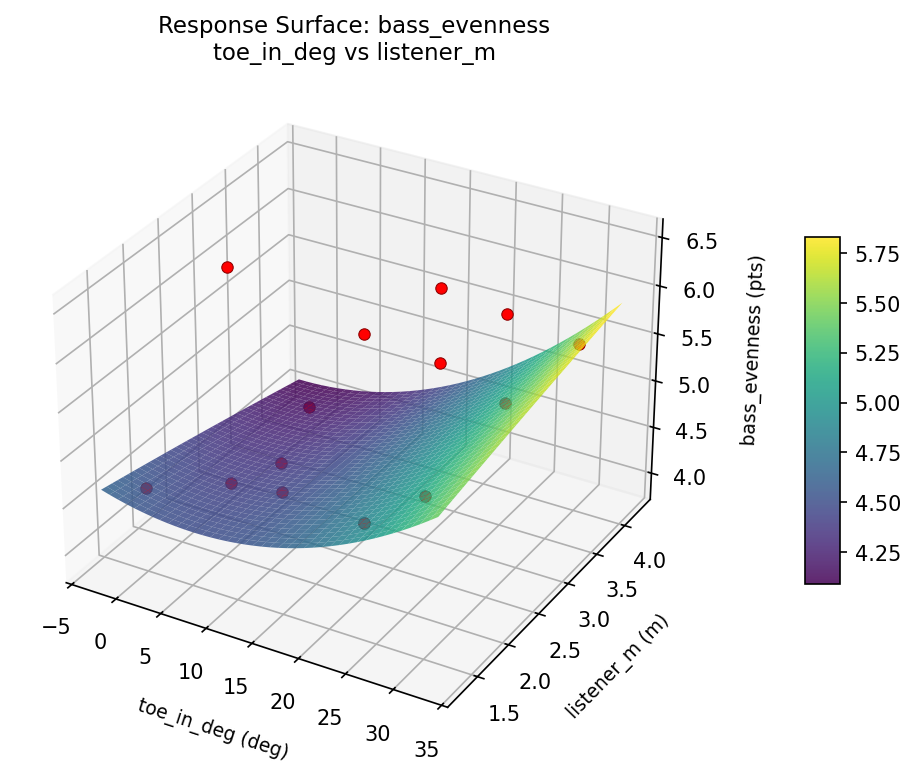
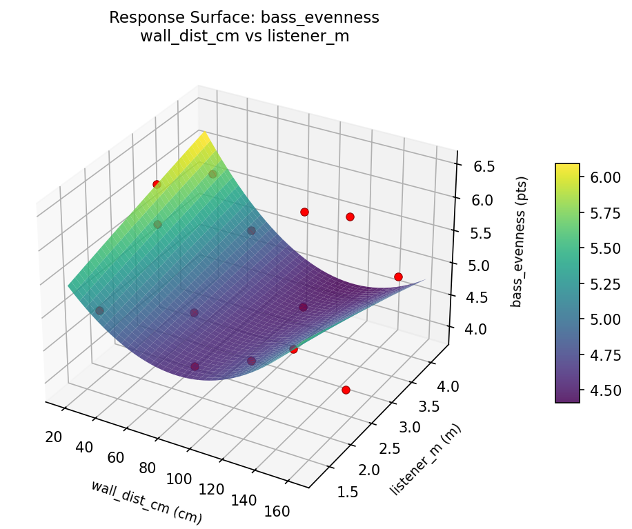
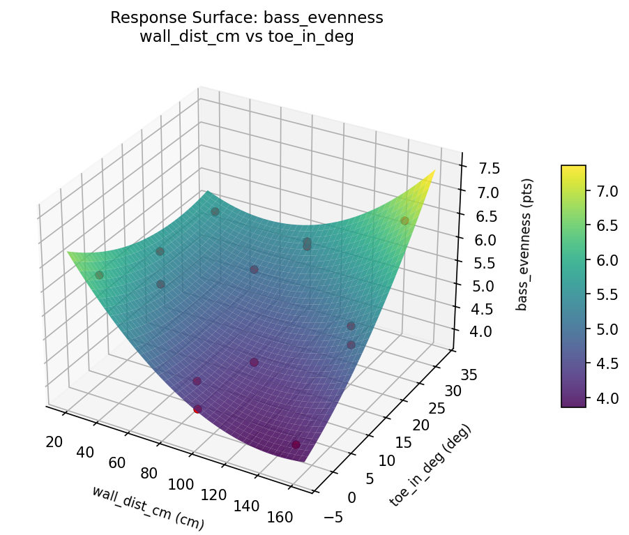
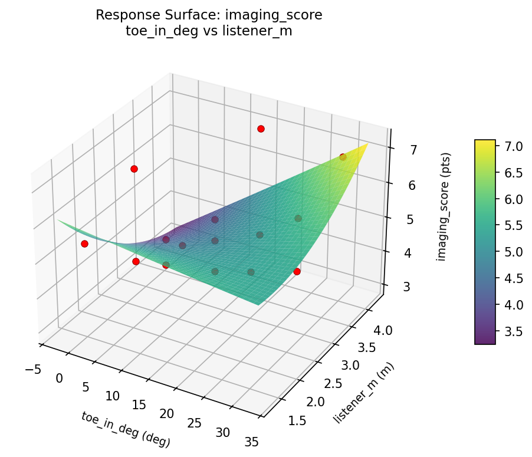
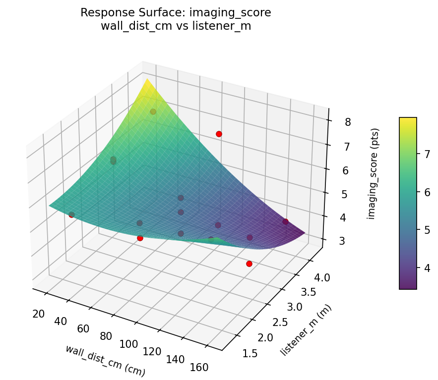
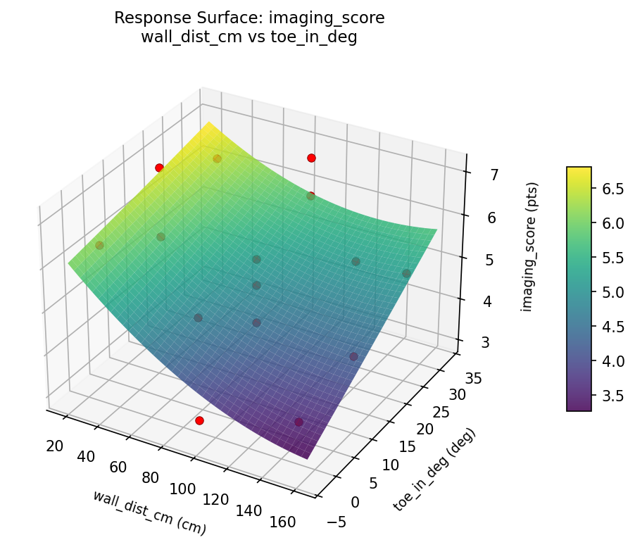

Summary
This experiment investigates speaker placement in room. Box-Behnken design to maximize stereo imaging and minimize bass nulls by tuning distance from wall, toe-in angle, and listener distance.
The design varies 3 factors: wall dist cm (cm), ranging from 30 to 150, toe in deg (deg), ranging from 0 to 30, and listener m (m), ranging from 1.5 to 4.0. The goal is to optimize 2 responses: imaging score (pts) (maximize) and bass evenness (pts) (maximize). Fixed conditions held constant across all runs include speaker type = bookshelf, room size = medium.
A Box-Behnken design was chosen because it efficiently fits quadratic models with 3 continuous factors while avoiding extreme corner combinations — requiring only 15 runs instead of the 8 needed for a full factorial at two levels.
Quadratic response surface models were fitted to capture potential curvature and factor interactions. The RSM contour plots below visualize how pairs of factors jointly affect each response.
Key Findings
For imaging score, the most influential factors were wall dist cm (44.9%), toe in deg (37.5%), listener m (17.6%). The best observed value was 7.1 (at wall dist cm = 90, toe in deg = 30, listener m = 4).
For bass evenness, the most influential factors were toe in deg (52.2%), wall dist cm (42.8%), listener m (5.0%). The best observed value was 6.5 (at wall dist cm = 30, toe in deg = 15, listener m = 4).
Recommended Next Steps
- Run confirmation experiments at the predicted optimal settings to validate the model.
- Consider whether any fixed factors should be varied in a future study.
Experimental Setup
Factors
| Factor | Low | High | Unit |
|---|
wall_dist_cm | 30 | 150 | cm |
toe_in_deg | 0 | 30 | deg |
listener_m | 1.5 | 4.0 | m |
Fixed: speaker_type = bookshelf, room_size = medium
Responses
| Response | Direction | Unit |
|---|
imaging_score | ↑ maximize | pts |
bass_evenness | ↑ maximize | pts |
Configuration
{
"metadata": {
"name": "Speaker Placement in Room",
"description": "Box-Behnken design to maximize stereo imaging and minimize bass nulls by tuning distance from wall, toe-in angle, and listener distance"
},
"factors": [
{
"name": "wall_dist_cm",
"levels": [
"30",
"150"
],
"type": "continuous",
"unit": "cm"
},
{
"name": "toe_in_deg",
"levels": [
"0",
"30"
],
"type": "continuous",
"unit": "deg"
},
{
"name": "listener_m",
"levels": [
"1.5",
"4.0"
],
"type": "continuous",
"unit": "m"
}
],
"fixed_factors": {
"speaker_type": "bookshelf",
"room_size": "medium"
},
"responses": [
{
"name": "imaging_score",
"optimize": "maximize",
"unit": "pts"
},
{
"name": "bass_evenness",
"optimize": "maximize",
"unit": "pts"
}
],
"settings": {
"operation": "box_behnken",
"test_script": "use_cases/161_speaker_placement/sim.sh"
}
}
Experimental Matrix
The Box-Behnken Design produces 15 runs. Each row is one experiment with specific factor settings.
| Run | wall_dist_cm | toe_in_deg | listener_m |
|---|
| 1 | 90 | 0 | 1.5 |
| 2 | 90 | 15 | 2.75 |
| 3 | 150 | 15 | 4 |
| 4 | 150 | 15 | 1.5 |
| 5 | 90 | 15 | 2.75 |
| 6 | 90 | 15 | 2.75 |
| 7 | 30 | 15 | 4 |
| 8 | 150 | 0 | 2.75 |
| 9 | 90 | 0 | 4 |
| 10 | 150 | 30 | 2.75 |
| 11 | 30 | 15 | 1.5 |
| 12 | 90 | 30 | 4 |
| 13 | 30 | 0 | 2.75 |
| 14 | 30 | 30 | 2.75 |
| 15 | 90 | 30 | 1.5 |
Step-by-Step Workflow
1
Preview the design
$ python doe.py info --config use_cases/161_speaker_placement/config.json
2
Generate the runner script
$ python doe.py generate --config use_cases/161_speaker_placement/config.json \
--output use_cases/161_speaker_placement/results/run.sh --seed 42
3
Execute the experiments
$ bash use_cases/161_speaker_placement/results/run.sh
4
Analyze results
$ python doe.py analyze --config use_cases/161_speaker_placement/config.json
5
Get optimization recommendations
$ python doe.py optimize --config use_cases/161_speaker_placement/config.json
6
Generate the HTML report
$ python doe.py report --config use_cases/161_speaker_placement/config.json \
--output use_cases/161_speaker_placement/results/report.html
Features Exercised
| Feature | Value |
|---|
| Design type | box_behnken |
| Factor types | continuous (all 3) |
| Arg style | double-dash |
| Responses | 2 (imaging_score ↑, bass_evenness ↑) |
| Total runs | 15 |
Analysis Results
Generated from actual experiment runs using the DOE Helper Tool.
Response: imaging_score
Top factors: wall_dist_cm (44.9%), toe_in_deg (37.5%), listener_m (17.6%).
Pareto Chart

Main Effects Plot

Response: bass_evenness
Top factors: toe_in_deg (52.2%), wall_dist_cm (42.8%), listener_m (5.0%).
Pareto Chart

Main Effects Plot

Response Surface Plots
3D surfaces fitted with quadratic RSM. Red dots are observed data points.
bass evenness toe in deg vs listener m

bass evenness wall dist cm vs listener m

bass evenness wall dist cm vs toe in deg

imaging score toe in deg vs listener m

imaging score wall dist cm vs listener m

imaging score wall dist cm vs toe in deg

Full Analysis Output
RSM surface: rsm_imaging_score_wall_dist_cm_vs_toe_in_deg.png
RSM surface: rsm_imaging_score_wall_dist_cm_vs_listener_m.png
RSM surface: rsm_imaging_score_toe_in_deg_vs_listener_m.png
RSM surface: rsm_bass_evenness_wall_dist_cm_vs_toe_in_deg.png
RSM surface: rsm_bass_evenness_wall_dist_cm_vs_listener_m.png
RSM surface: rsm_bass_evenness_toe_in_deg_vs_listener_m.png
=== Main Effects: imaging_score ===
Factor Effect Std Error % Contribution
--------------------------------------------------------------
wall_dist_cm 1.6500 0.3144 44.9%
toe_in_deg 1.3750 0.3144 37.5%
listener_m 0.6464 0.3144 17.6%
=== Summary Statistics: imaging_score ===
wall_dist_cm:
Level N Mean Std Min Max
------------------------------------------------------------
150 4 4.6750 1.1177 3.7000 6.2000
30 4 6.3250 0.6551 5.5000 7.1000
90 7 5.1429 1.2778 3.0000 6.9000
toe_in_deg:
Level N Mean Std Min Max
------------------------------------------------------------
0 4 4.6250 1.5543 3.0000 6.4000
15 7 5.3571 1.1088 4.0000 7.1000
30 4 6.0000 0.8832 4.8000 6.9000
listener_m:
Level N Mean Std Min Max
------------------------------------------------------------
1.5 4 5.7750 0.3862 5.4000 6.2000
2.75 7 5.1286 1.0356 3.7000 6.4000
4 4 5.2500 2.0632 3.0000 7.1000
=== Main Effects: bass_evenness ===
Factor Effect Std Error % Contribution
--------------------------------------------------------------
toe_in_deg 1.0750 0.2240 52.2%
wall_dist_cm 0.8821 0.2240 42.8%
listener_m 0.1036 0.2240 5.0%
=== Summary Statistics: bass_evenness ===
wall_dist_cm:
Level N Mean Std Min Max
------------------------------------------------------------
150 4 5.1500 1.0755 3.9000 6.5000
30 4 5.6250 0.4924 5.0000 6.2000
90 7 4.7429 0.8502 3.9000 5.9000
toe_in_deg:
Level N Mean Std Min Max
------------------------------------------------------------
0 4 4.6750 1.0626 3.9000 6.2000
15 7 4.9429 0.7955 3.9000 5.9000
30 4 5.7500 0.5066 5.4000 6.5000
listener_m:
Level N Mean Std Min Max
------------------------------------------------------------
1.5 4 5.0750 0.3594 4.6000 5.4000
2.75 7 5.1286 1.1814 3.9000 6.5000
4 4 5.0250 0.7632 4.0000 5.7000
Pareto chart (imaging_score): use_cases/161_speaker_placement/results/analysis/pareto_imaging_score.png
Pareto chart (bass_evenness): use_cases/161_speaker_placement/results/analysis/pareto_bass_evenness.png
Main effects (imaging_score): use_cases/161_speaker_placement/results/analysis/main_effects_imaging_score.png
Main effects (bass_evenness): use_cases/161_speaker_placement/results/analysis/main_effects_bass_evenness.png
Optimization Recommendations
=== Optimization: imaging_score ===
Direction: maximize
Best observed run: #12
wall_dist_cm = 90
toe_in_deg = 30
listener_m = 4
Value: 7.1
RSM Model (linear, R² = 0.0404, Adj R² = -0.2214):
Coefficients:
intercept +5.3333
wall_dist_cm +0.0750
toe_in_deg -0.0375
listener_m -0.3125
RSM Model (quadratic, R² = 0.7804, Adj R² = 0.3851):
Coefficients:
intercept +4.7000
wall_dist_cm +0.0750
toe_in_deg -0.0375
listener_m -0.3125
wall_dist_cm*toe_in_deg +1.2000
wall_dist_cm*listener_m -0.0500
toe_in_deg*listener_m +0.4250
wall_dist_cm^2 -0.6875
toe_in_deg^2 +0.7375
listener_m^2 +1.1375
Curvature analysis:
listener_m coef=+1.1375 convex (has a minimum)
toe_in_deg coef=+0.7375 convex (has a minimum)
wall_dist_cm coef=-0.6875 concave (has a maximum)
Notable interactions:
wall_dist_cm*toe_in_deg coef=+1.2000 (synergistic)
toe_in_deg*listener_m coef=+0.4250 (synergistic)
Predicted optimum (from quadratic model):
wall_dist_cm = 90
toe_in_deg = 0
listener_m = 1.5
Predicted value: 7.3500
Model quality: Good fit — general trends are captured, some noise remains.
Factor importance:
1. listener_m (effect: 1.4, contribution: 46.9%)
2. wall_dist_cm (effect: 0.9, contribution: 29.1%)
3. toe_in_deg (effect: 0.7, contribution: 24.1%)
=== Optimization: bass_evenness ===
Direction: maximize
Best observed run: #8
wall_dist_cm = 30
toe_in_deg = 15
listener_m = 4
Value: 6.5
RSM Model (linear, R² = 0.0861, Adj R² = -0.1631):
Coefficients:
intercept +5.0867
wall_dist_cm +0.0125
toe_in_deg -0.0875
listener_m +0.3250
RSM Model (quadratic, R² = 0.4833, Adj R² = -0.4466):
Coefficients:
intercept +4.1333
wall_dist_cm +0.0125
toe_in_deg -0.0875
listener_m +0.3250
wall_dist_cm*toe_in_deg +0.3250
wall_dist_cm*listener_m -0.0500
toe_in_deg*listener_m +0.0500
wall_dist_cm^2 +0.3708
toe_in_deg^2 +0.7708
listener_m^2 +0.6458
Curvature analysis:
toe_in_deg coef=+0.7708 convex (has a minimum)
listener_m coef=+0.6458 convex (has a minimum)
wall_dist_cm coef=+0.3708 convex (has a minimum)
Notable interactions:
wall_dist_cm*toe_in_deg coef=+0.3250 (synergistic)
Predicted optimum (from linear model):
wall_dist_cm = 90
toe_in_deg = 0
listener_m = 4
Predicted value: 5.4992
Model quality: Weak fit — consider adding center points or using a different design.
Factor importance:
1. listener_m (effect: 0.9, contribution: 45.4%)
2. toe_in_deg (effect: 0.8, contribution: 40.1%)
3. wall_dist_cm (effect: 0.3, contribution: 14.4%)